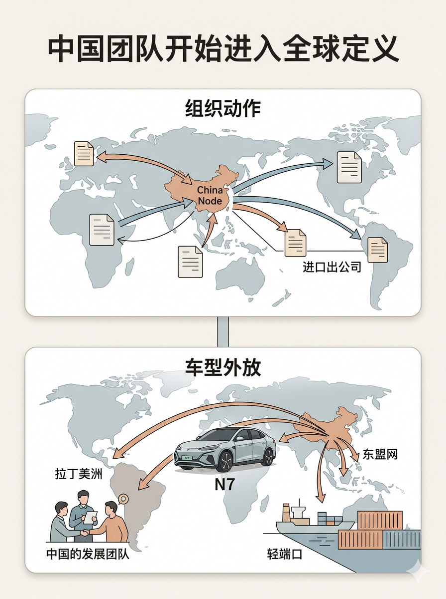
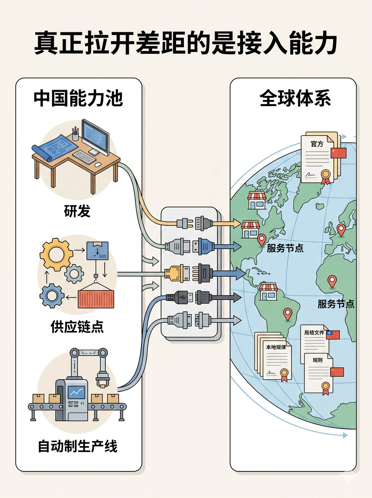

历史 Nano Banana 竖版短视频配图基线：表达跨区域经营网络、节点连接和本地协同，避免网络拓扑稀释
# 分块段 05 Prompt 生成一张 3:4 竖式静态配图。顶部放主标题“中国团队开始进入全球定义”。 标题下方采用上下两段结构。上方放一张横向大卡片，标题写“组织动作”。卡片内部画企业战略版图、中国节点被接入全球出口路径的结构，配进出口公司文件和组织连线，重点是中国节点进入全球出口体系。不要画成纯 PPT 组织架构图。 下方放一张横向大卡片，标题写“车型外放”。卡片内部画 N7 车型与向拉美、东盟流向的出口箭头，配中国团队、海外目的地节点和轻港口或运输线索。上方组织动作通过一条向下承接线导向下方车型外放，形成同一条升级链。不要把车型外放画成普通本地上市海报。 地图使用全球流向示意图，语境明确为中国开发、流向拉美与东盟，不要画成中国国内销售地图。 图中只允许出现这些文字：“中国团队开始进入全球定义”“组织动作”“车型外放”“N7”。除这些文字外，不要新增任何说明性文字。不要水印，不要“AI生成”字样，不要品牌官方 logo，不要额外英文装饰。 整体视觉采用柔和、克制、轻叙事、上下承接关系清楚的 clean editorial illustration，flat illustration，light texture.

# 分块段 08 Prompt 生成一张 3:4 竖式静态配图。顶部放主标题“真正拉开差距的是接入能力”。 标题下方采用左中右连接结构。左侧放一张竖向大卡片，标题写“中国能力池”。卡片内部画研发桌面、供应链节点、制造产线三组能力锚点，配向中部汇聚的连线，不要把三项能力压成单一图标。 中部放一个独立关系连接区，不放标题。中部画多股能力连线汇入一个接口枢纽，配接头、连接节点和方向箭头，把接入动作明确画出来。不要做成抽象主轴或光束特效。 右侧放一张竖向大卡片，标题写“全球体系”。卡片内部画全球渠道网络与服务体系主容器，配门店点位、服务节点和本地规则文件。重点是右侧承接中部接入动作，不要只剩抽象地球。 整张图必须让观众一眼看懂：左侧中国能力，经由中部接入连接区，真正接进右侧全球渠道与服务体系。地图使用全球网络地图，语境明确为中国能力接入全球体系，不要只画中国本地网络，也不要只画欧洲单区域地图。 图中只允许出现这些文字：“真正拉开差距的是接入能力”“中国能力池”“全球体系”。除这些文字外，不要新增任何说明性文字。不要水印，不要“AI生成”字样，不要品牌官方 logo，不要额外英文装饰。 整体视觉采用清晰、理性、连接动作明确、结尾有收束感的 clean editorial illustration，flat illustration，light texture.
